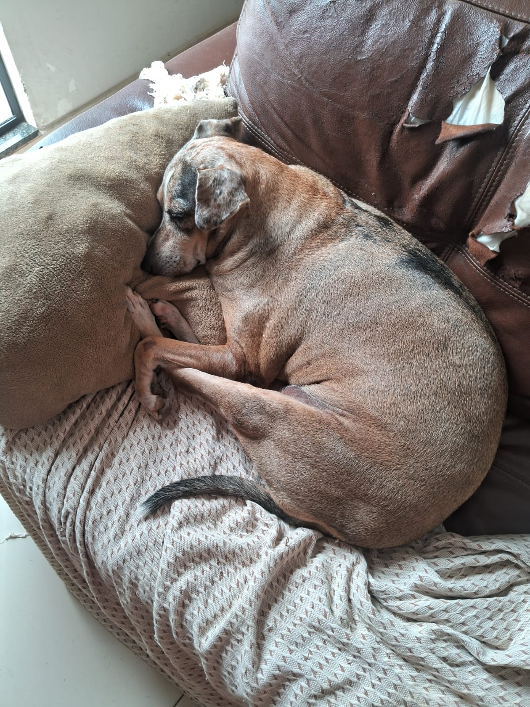

Sobre mim
Meu nome é Cecília Simone Pereira Dantas.
Sou estudante de Informática no IFRN Campus Santa Cruz.
Tenho 4 cachorros lindos e perfeitos.
Gosto muito de fazer crochê nas horas vagas e jogar just dance (sei quase todas as danças).
Meu nome é Cecília Simone Pereira Dantas.
Sou estudante de Informática no IFRN Campus Santa Cruz.
Tenho 4 cachorros lindos e perfeitos.
Gosto muito de fazer crochê nas horas vagas e jogar just dance (sei quase todas as danças).